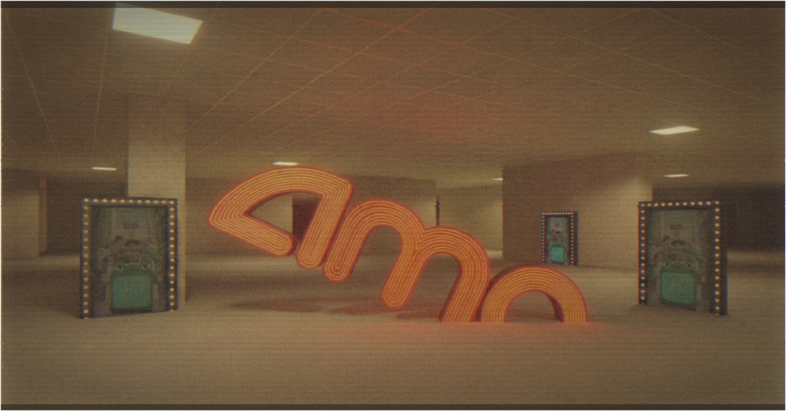

By now you’ve heard it all. Backrooms obliterated opening weekend projections, setting all sorts of records. It’s A24’s biggest opening by over $50 million (and will be their top domestic earner by mid-week). Kane Parsons is the youngest director to ever land a #1 movie. And, oddly, one of the records we’ve heard less about: it’s the biggest original horror opening of all time (original as in non-sequel/reboot). Meanwhile, Obsession continues to rise weekend-to-weekend against all odds, overtaking Star Wars just seven days into the Mandalorian’s run. It must have watched the tape from The Ring.
Together, Backrooms and Obsession have birthed a narrative that will send ripple effects through the film industry for the rest of the decade. Barbenheimer was a sensation, but it was a meme. Backrooms and Obsession have long-term implications. Already, the summer’s upcoming releases feel of the past, in the way action films felt after The Matrix or the way any blockbuster felt after The Dark Knight.
The big headline is that the YouTube-to-Hollywood pipeline is real. It’s a viable path for YouTube creators and a lucrative opportunity for Hollywood studios. And the young audiences showing up are pointing to resurgence in movie going. The success of Backrooms and Obsession—in relation to their internet origins—is hard to quantify, but Hollywood will do its best.
But you can read about that in Variety, or The Hollywood Reporter, or wherever you get your movie news. Maybe you get all your box office info from your boyfriend, and you like to quiz him on stuff like how steep Backrooms is going to fall in its second weekend, because you like to see him light up, but that also brings you sadness because where does the light go when it’s not there?
Surely you have your sources, so we won’t talk about the records, YouTube, or any of that. We’ll talk about something else.
In 2020, at the peak of the pandemic, I wrote something called Activated Boredom. It was about what I’d been noticing in that suspended summer when public space had emptied out and our relationship to physical reality had become genuinely open.
A digitally native generation, I argued, had developed a particular relationship to mundane physical places—ATMs, grocery stores, malls, parking lots—that the rest of us still saw as functional infrastructure. For them, those places had been untethered from their original purpose. They had become exotic. The ATM wasn’t a way to get cash out; it was a secret meeting point, or a portal. The mall wasn’t where you shopped; it was an archaeological expedition, full of ancient secrets. Long, carpeted office corridors become an infinite map of potential. It is no coincidence that the Backrooms mythology took off during this period.
I didn’t include movie theaters in the list of the types of spaces being reappraised. Maybe I should have.
We suspect that younger audiences—those driving the success of Obsession and Backrooms—aren’t going to the movies to be entertained, or moved, or intellectually stimulated. They aren’t even really going for the movie. They’re going because the movieplex has become its own kind of mythical destination. The film is the pretext. What happens around it—the texting, the posting, the logging, the shared inside joke, the group chat afterward—is what counts. Just ask what audiences remember most from their viewings of A Minecraft Movie. The movie was the conduit. Conquering the auditorium was the point.
Since theaters reopened in 2021, Nicole Kidman’s ad has played in front of every movie at every AMC in America. We come to AMC theaters to laugh, to cry, to care. Because we need that, all of us. That indescribable feeling we get when the lights begin to dim. The narration was written as a post-pandemic rallying cry. Like maybe during our year in lockdown we’d forgotten why we went to the movies, and Nicole would remind us. Almost like we had to step away to really remember what it was all really about: the magic.
Five years later, it plays differently. More like an epitaph. Or like one of those electronic artifacts you see in movies that aliens find thousands of years from now when they’re searching for life on earth, and the thing suddenly starts working and talking and moving (let’s face it, it’s probably a robotic teddy bear), and the aliens can’t believe after all this time it’s still carrying on. Something like that.
Now, Nicole’s narration is describing a relationship to cinema that the audience around it only seems to be role-playing at a post-ironic distance.
So what does Hollywood do about this? What do movie theaters do? What can they all learn from it?
The answer is the same as what that robotic bear sees when it looks you back in your eyes.
Nothing.